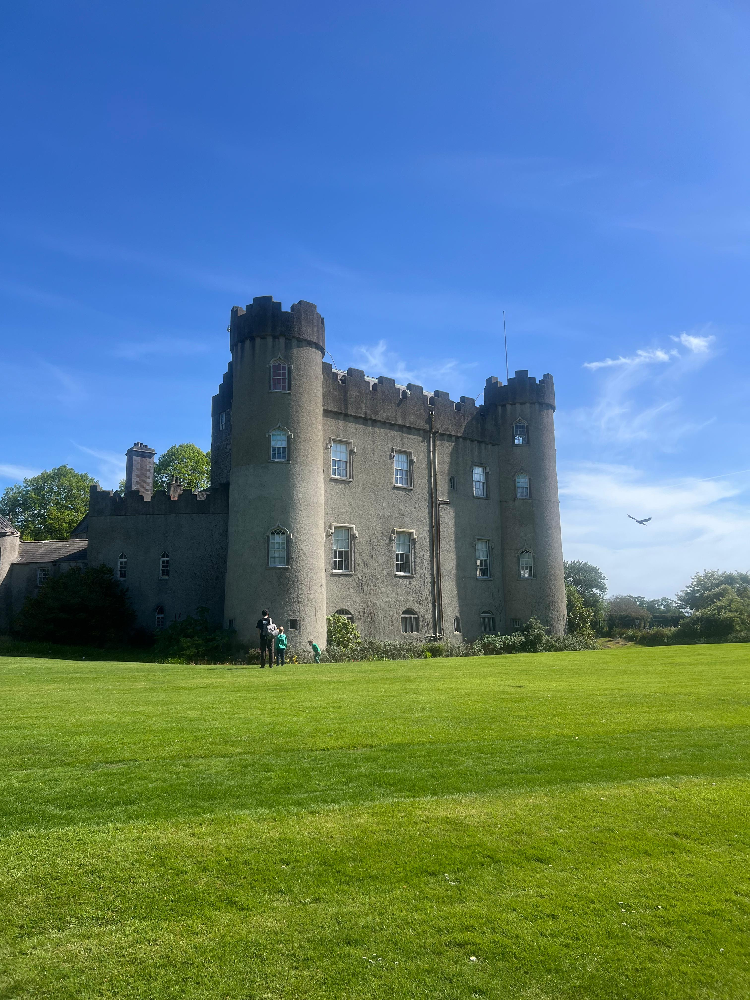
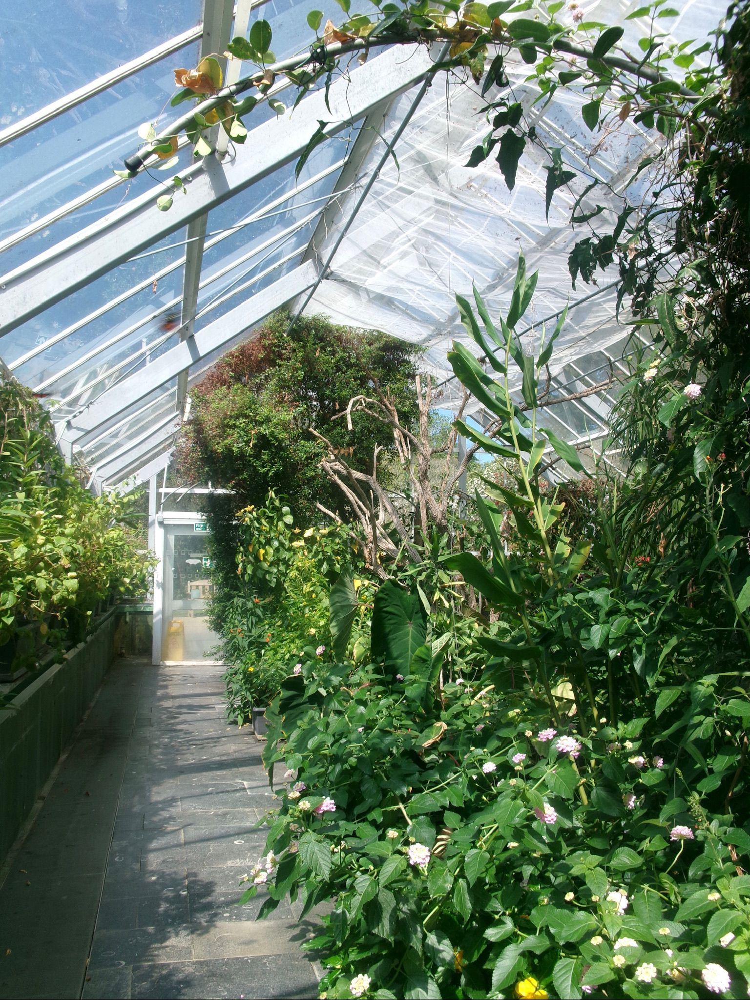
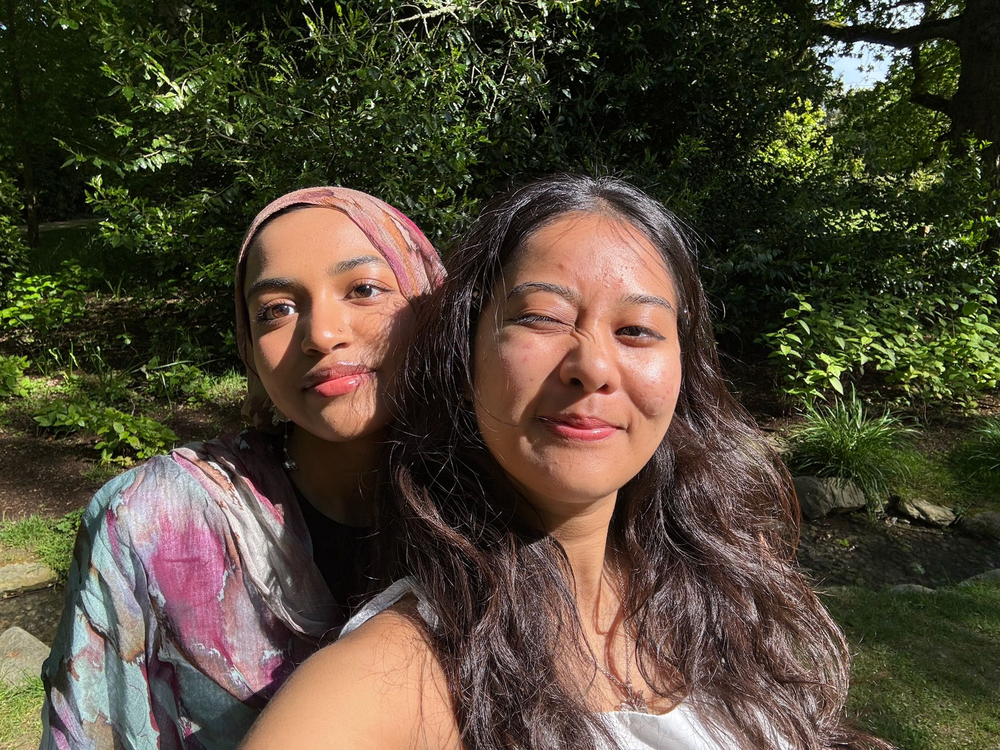
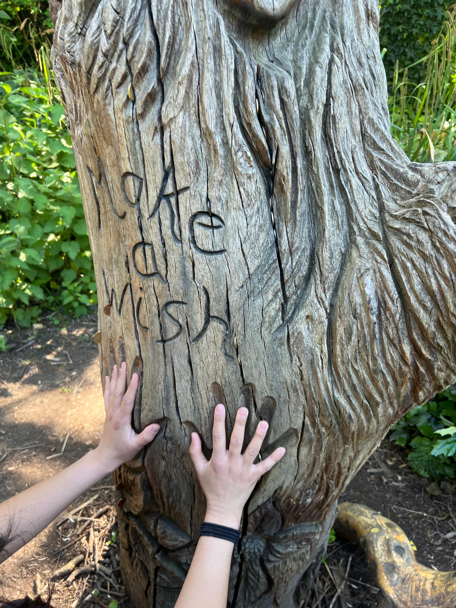
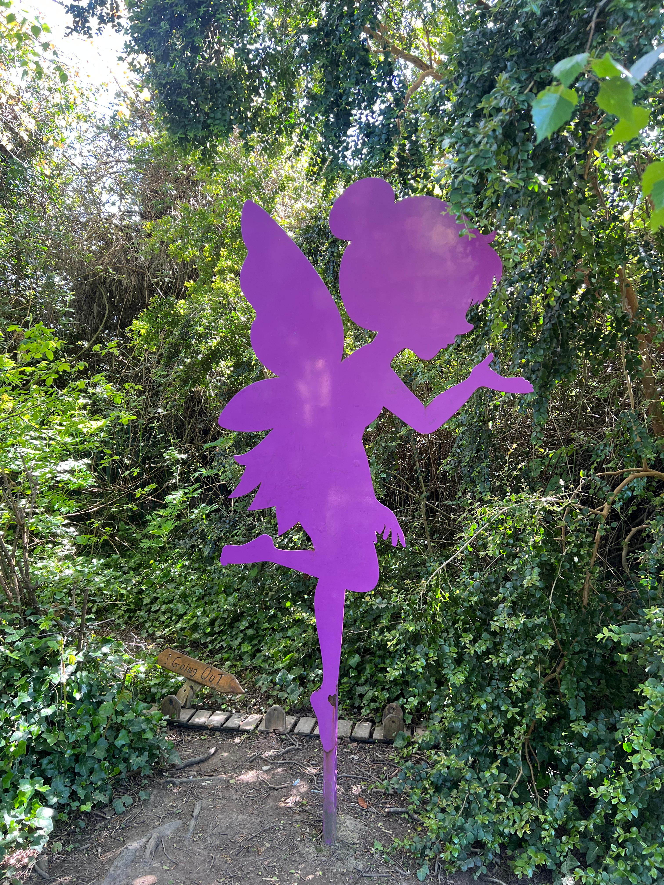
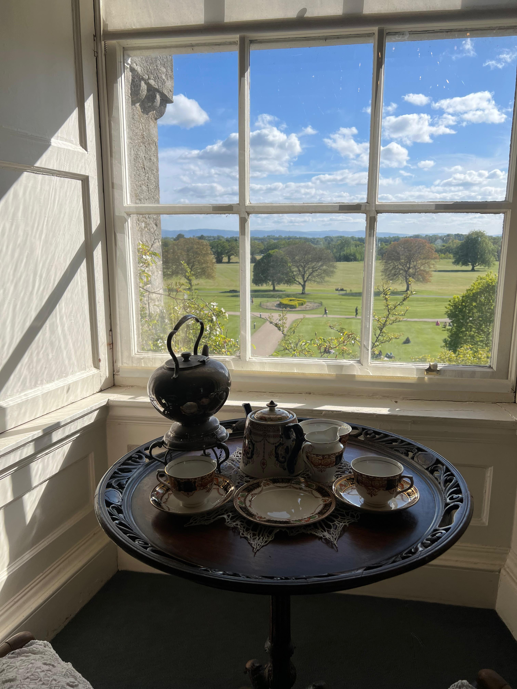
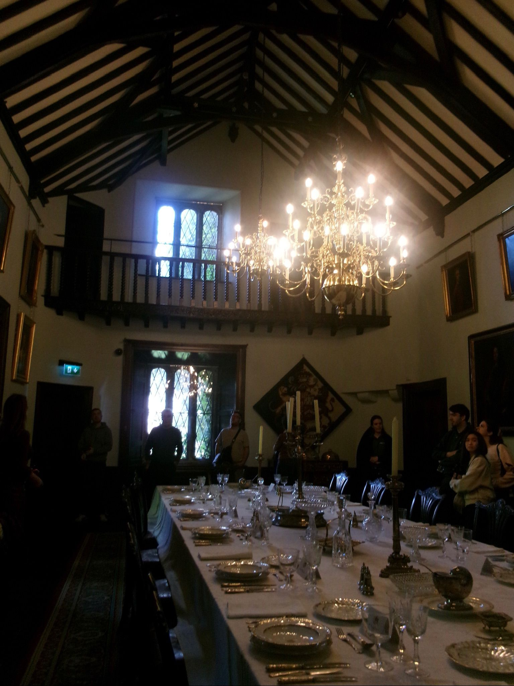
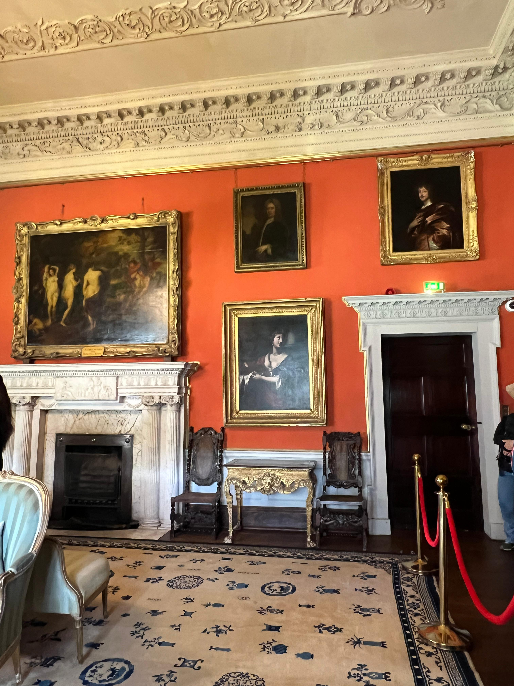
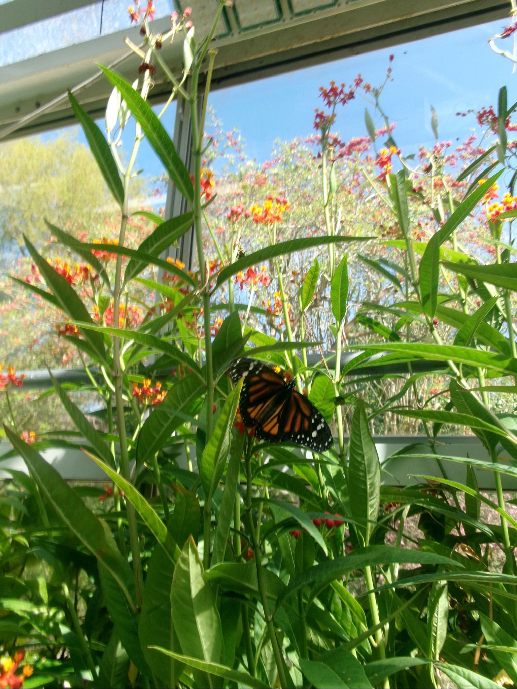

First Impressions
Malahide is a beautiful scenic place to visit with lots to do.
Things I Noticed
- Small community market
- City is different from tourist attractions
- Historical backgrounds tied to buildings
- Themed gardens in each sight
What I Recommend
There are local businesses and markets you can visit that often serve crepes, home-made skin care & creams, pita, etc. If you are interested in castle and gardens at all, the tour is something you should look into. If you are a student, its $12 for the entire tour, which takes about 2-3 hours to complete.
Photo Gallery









